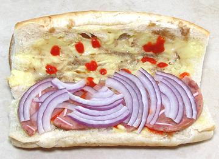

SAFARI
Users
In austere North Vietnam Banh Mi began very simply - a small roll with a sprinkle of salt and pepper and a spread of pâté or a little sliced meat. It is in the more decadent South Vietnam, particularly Saigon, that the wonderfully diverse Banh Mi sandwiches we know today came to be.These sandwiches are made in many ways, with an incredible array of fillings, vegetables, pickles, herbs and spices, and in the California, home to the largest Vietnamese community outside Vietnam, they have become even more diverse.
The Build
Below is a typical assembly for a simple sandwich quickly made from available ingredients readily at hand. The photos are from my favorite quick Banh Mi, but most Banh Mi follow this same sequence with minor modifications as required by the ingredients. With the ingredients at hand, the example Banh Mi takes just 8 minutes to make, and is, in my opinion, absurdly delicious.
Bread
Given the origin of these sandwiches, French baguettes and rolls are a natural, but other breads can be used if they have the proper characteristics. They should be light and airy, with very thin, preferably somewhat brittle crusts and a soft, springy and slightly sweet interior. Today, in North America, slider buns, kaiser rolls and toasted breads are also sometimes used.
Unacceptable are dense "artisan breads" with thick crusts and strongly
flavored grains.
Spread & Sprinkle
First the roll is cut open, but leaving a hinge on one side. I find a thin, razor sharp Santoku vegetable slicing knife works far better on bread than serrated bread knives. Some crumb may be removed from the top half to make room for vegetables.
Next, the entire cut surface is spread with Mayonnaise. After the spread I apply a generous sprinkle of Magi Seasoning (brown splotches) which is included in most Banh Mi sandwiches. I also add quite a few dollops of Sriracha Sauce. This ingredient is included only by personal preference, and, yes, I like a lot of it.
---------- In Vietnam, European style salted butter is also often used, though Mayonnaise predominates. A newer innovation is to spread it with mashed Avocado (once known as "midshipman's butter"). Flavored mayonnaise spreads are another alternative.
Home made Mayo is best, at least here in "over regulated" California,
but more risky in "business friendly" Red States. Nearly all food
writers agree: the commercial mayo to use is Best Foods "Real Mayonnaise"
(west of the Mississippi) or Hellmann's "Real Mayonnaise" (east of the
Mississippi and Canada). In any case, it should be the full fat version.
Don't worry about it, the "low fat diet" never worked and has recently
been revealed to have been a secret marketing campaign by the sugar
industry.
Main Filling Layer
Next goes in the Main Filling. In this case it's Cold Cuts, and in this case specifically Vietnamese Head Cheese (Gio Thu). I use various Vietnamese cold cuts, and sometimes cod cuts taht aren't Vietnamese - depends on what's on hand. For some examples of Vietnamese cold cuts, see our page Vietnamese Sausages page.
---------- Many different fillings are used in Vietnam - most are cold, but also warm fillings are used. Traditional fillings include grilled Chicken, grilled Pork or grilled Beef. Seafood fillings are also used. Vietnamese in North America have expanded the fillings list considerably, even as far as Andrea Nguyen's Oyster Po'boy, Sloppy Joe and Korean Beef and Kimchi Banh Mi.
Vegetarian fillings are available, such as omelet, tempeh and
mushrooms, whole or sliced. There are a number of tofu products that
will work, particularly pressed tofu seasoned and baked. For suggestions
see our Tofu / Bean Curd
page. Also wheat gluten based products can be stewed, seasoned or
otherwise prepared for this use. See our
Wheat Gluten page.
Vegetable Layer
 My vegetable layer is most often just Red Onion, but you can use whatever crisp fresh vegetables you'd like, just one, or several.
--------- Other vegetables you can use include thin sticks of
Carrot and Daikon Radish, sliced Fresno or Jalapeno Chilis, strips of
red or green Bell Peppers, sliced grape tomatoes, Scallions, etc.
Pickle Layer
Some crisp, tangy pickles are added next to round out the blend of flavors. My favorite is Pickled Red Cabbage, so it's what I usually have on hand.
---------- Many pickles are used. The ones we have recipes
for here are:
Red Cabbage Pickle.
Daikon & Carrot Pickle.
Shallot Pickle.
Snow Vegetable a
natural pickle made similarly in Vietnam.
Packaged Asian Mustard Green pickles and European Sauerkraut could
also be used. Asian markets serving a strong Vietnamese community will have
jars of various pickles, including Leeks and Shallots that can be
sliced and used in Banh Mi.
Cucumber & Herb Layer
Cucumbers are often the last layer, because their thin flatness helps you pack down the other ingredients, and helps keep them under control. While any kind of cucumber can be used, I always use Persians, which need not be peeled or seeded. Due to our ethnic mix in Los Angeles produce markets here always have mountains of these. Because they are small I slice them on a sharp diagonal.
Many, many fresh herbs are used in Vietnam. Cilantro is probably the
most used, but my strong favorite for these sandwiches is Dill. This is
not "authentic", because the Vietnamese don't usually use Dill raw.
Finished Banh Mi
Close it up and you're ready to go!
Finished and Cut Banh Mi
The sandwich can be cut in half for convenience of serving and/or eating. These sandwiches are very well behaved, and their ingredients stay inside, so long as you have a reasonably firm grip on them.
Finished and Cut Party Banh Mi
Banh Mi can be made in long thin French baguettes and cut into segments for party service. The one described above keeps very well, even overnight, packaged in plastic clamshells and refrigerated. Some others may not keep as well if they have too much moisture. The 8 x 8 inch clamshells are available at Smart and Final and other restaurant supply stores.
Again, I use a very thin, razor sharp Santoku vegetable slicing knife
rather than a serrated bread knife. Serrated knives tend to tear rather
than cut.